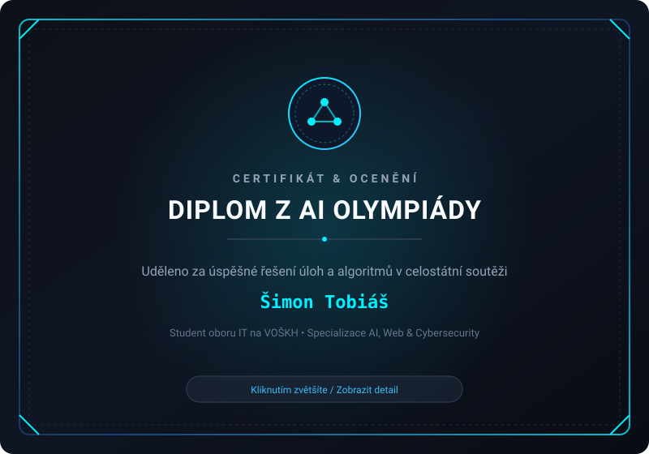

Šimon Tobiáš
Tvorba a úprava webů & aplikací
Student IT na VOŠKH se zájmem o funkční kód, spolehlivé zabezpečení a čistou architekturu.
Věnuji se vývoji webových stránek od základu, opravám a modernizaci existujících projektů a tvorbě praktických aplikací. Zakládám si na přehledném zdrojovém kódu, rychlosti načítání a bezpečných postupech bez zbytečného balastu.
Čemu se věnuji a co řeším
Kombinuji praktické programování s bezpečnostním myšlením. Ať už jde o novou webovou prezentaci nebo úpravu funkčního řešení.
Tvorba a úpravy webů
Vývoj responzivních stránek od základů i refaktoring starších webů. Přepisování fixních layoutů, zrychlování načítání, odstraňování chyb a úprava CSS stylů pro bezchybné zobrazení na všech typech zařízení.
- HTML5 / Semantic
- Moderní CSS3 / Flex / Grid
- Responzivní design
- Optimalizace rychlosti
Aplikace a programování
Stavba aplikací s logickým členěním kódu, obsluhou uživatelského rozhraní a prací s daty. Zaměření na čistý JavaScript, propojování s API a správné ošetření chybových stavů.
- JavaScript (ES6+)
- DOM & Event Handling
- REST API & JSON
- Struktura dat & Logika
Kybernetická bezpečnost
Aplikace bezpečnostních zásad již při psaní kódu. Znalost síťových protokolů, audit zabezpečení HTTP hlaviček, prevence zranitelností (XSS, CSRF) a bezpečné zacházení se vstupy uživatele.
- Web App Security
- HTTP & Bezpečnostní hlavičky
- Základy sítí & Linux
- Validace vstupů
Vybrané projekty a úpravy
Ukázky mé práce – od tvorby nových rozhraní přes refaktoring a opravy stávajícího kódu až po bezpečnostní skripty.
Diplom z AI olympiády
Účast a ocenění v celostátní soutěži zaměřené na logické uvažování, algoritmy a principy umělé inteligence.

Ocenění v AI olympiádě
V soutěži jsem řešil komplexní algoritmické úlohy, analýzu datových struktur a praktické aplikace konceptů strojového učení. Ocenění potvrzuje schopnost systematického přístupu k řešení netriviálních technických výzev.
- Praktické porozumění algoritmům a logickým strukturám
- Schopnost analyzovat problém a navrhnout efektivní postup
- Propojení teorie umělé inteligence s reálným kódem
Kontaktujte mě
Máte zájem o spolupráci na webu, úpravu existujícího projektu nebo konzultaci? Můžete mi přímo zavolat, napsat e-mail nebo mě kontaktovat přes sítě.